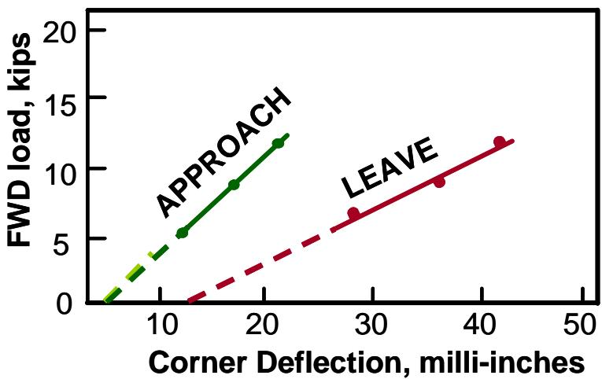
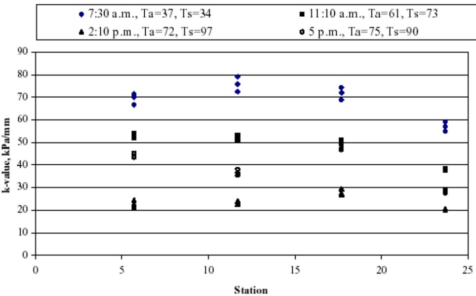

Deflection Measurement
Deflection measurement is a nondestructive field technique, standardized by AASHTO T 256 and ASTM D4695/D4694, in which a known load is applied to the surface of an existing concrete pavement and the resulting vertical movement is recorded[1][2]. The measured deflections reveal how uniformly the slab is supported, enable back‑calculation of key material properties such as concrete elastic modulus and subgrade reaction (k‑value), assess load‑transfer efficiency across joints and cracks, and locate voids beneath slab corners or edges, thereby providing a quantitative basis for judging structural adequacy and planning preservation versus structural rehabilitation[1][2]. Because deflection magnitude is sensitive to pavement stiffness, layer thicknesses, bonding conditions, load level, location, and temperature, testing is normally performed at 30‑ to 150‑m intervals on mid‑slab points (≥1.5 m from joints), slab corners, or outer wheelpaths of CRCP under temperatures below 70 °F and never when the pavement or subgrade is frozen[1][2].
CP Tech Center Guides reports covering “Deflection Measurement” also include the following subtopics: Falling Weight Deflectometer (FWD) Soil Support Assessment and Load Transfer Efficiency Measurement.
Load Transfer Efficiency Measurement utilizes this same deflectometer apparatus to record vertical movements on both sides of a joint, calculating the ratio that indicates how effectively wheel loads are shared across transverse joints or cracks. [3][4] The Falling Weight Deflectometer (FWD) Soil Support Assessment supplies the impact-load data and deflection basin measurements required to quantify subgrade stiffness and detect voids beneath slab corners or edges. [1][5]
Sources (5)
Sub-concepts (2)
Purpose and investigation objectives
“Pavement deflection testing is an extremely valuable engineering tool for assessing the uniformity and structural adequacy of existing pavements.” The investigation evaluates the structural condition of concrete pavements by probing base and subgrade support, material properties, load‑transfer capability, and void presence. It seeks to answer “Variability in deflections (and, by extension, the base and subgrade support conditions) over the length of a project and by season,” and to perform “Backcalculation of key material properties (specifically, the concrete elastic modulus and modulus of subgrade reaction [k‑value]) for evaluating their variability along the project and for assessing the structural condition of the pavement.” The study also determines “Load transfer efficiency (LTE) across joints and cracks” and “assess the load transfer capabilities of the pavement, particularly when signifiant pumping and faulting is observed.” Void detection is addressed by locating loss of support in mid‑slab areas “mid-slab (at least 1.5 m [5 ft] away from any crack or joint)” as well as at slab edges “Testing at the edge of the CRCP slab may also be conducted to identify the presence of voids.” Additional questions include the spatial extent of distress, the need for an “intensive deflection test program may be conducted” with “deflection measurements taken at close intervals within these areas,” and coordination with coring or other destructive sampling. [1][2]
The following figure illustrates how these deflection measurements vary along the length of a project.
 Illustration of deflection variation along a project. [2]
Illustration of deflection variation along a project. [2]
The figure displays a line graph plotting normalized maximum pavement deflection against the distance along the roadway, illustrating how support conditions vary spatially across a specific section. This visualization supports the assessment of uniformity in subgrade and base support by identifying subsections where distress or poor moisture conditions may be adversely affecting the pavement structure.
[1] — Ch. 3 (pp. 50–51); [2] — Ch. 3 (pp. 50–51)
“Deflection measurements reveal how uniformly a concrete pavement is supported and its current structural capacity,” allowing engineers to pinpoint sections where base or subgrade support varies, back‑calculate material properties, and evaluate load transfer. The guides note that “deflections should be measured at 30- to 150-m (100- to 500-ft) intervals” and recommend corner and edge tests to detect voids beneath slab corners or edges. “Backcalculation of key material properties (specifically, the concrete elastic modulus and modulus of subgrade reaction [k-value]) for evaluating their variability along the project and for assessing the structural condition of the pavement” provides a quantitative basis for design verification. Measurements also support “Load transfer efficiency (LTE) across joints and cracks” assessments and enable engineers to “assess the load transfer capabilities of the pavement, particularly when signifiant pumping and faulting is observed as part of the pavement distress survey.” When significant loss‑of‑support or voids are identified, “deflection testing may be needed to ensure that the existing pavement is still structurally adequate to receive pavement preservation treatments (and not structural treatments, such as an overlay).” Because the data locate problem areas, “deflection testing should be completed prior to any destructive testing to assist in locating areas where such sampling is required,” guiding coring placement. Collectively, these findings inform planning of reinforcement, joint repair, slab lifting, selection of thickness and material, maintenance scheduling, and prioritization between preservation versus structural rehabilitation. [1][2]
[1] — Ch. 3 (pp. 50–51); [2] — Ch. 3 (pp. 50–51)
Scope and applicability
Deflection measurement is appropriate for existing concrete pavements—including jointed slab pavements and continuously reinforced concrete pavements (CRCP)—when engineers need to evaluate uniformity, structural adequacy, and the condition of supporting layers. The guides note that “Pavement deflection testing is an extremely valuable engineering tool for assessing the uniformity and structural adequacy of existing pavements.” It is most useful when material characteristics such as “the stiffness of the pavement surface, the layer thicknesses, the slab‑base bonding conditions, and the degree and uniformity of support conditions” can be verified. The method addresses distresses including “Load transfer efficiency (LTE) across joints and cracks,” “Presence of voids under slab corners and edges,” curling or warping caused by temperature‑moisture gradients, as well as “particularly when signifiant pumping and faulting is observed as part of the pavement distress survey” and other “certain distress types (. oids, loss of load transfer, soft areas).” Test locations should include “Test locations include the mid-slab (at least 1.5 m [5 ft] away from any crack or joint) and at the slab corner,” and for CRCP “Continuously reinforced concrete pavements (CRCP) should be tested in the outer wheelpath with the center of the load approximately 0.6 m (2 ft) from the edge of the slab.” Loads are placed “The load should be placed between cracks and not over a crack” to assess transfer. Site conditions that promote reliable data are specified: testing when “Testing when the pavement temperature is less than 70°F and, ideally, when the pavement is not curled or warped due to temperature or moisture gradients through the slab is generally recommended,” avoiding frozen ground (“The deflection survey should never be conducted when the pavement or subgrade soil is frozen”), and preferably “the best time to conduct deflection testing is shortly after the spring thaw, after the soil has regained some of its strength.” [1][2]
The following figure illustrates the deflection load transfer efficiency concept relevant to these testing procedures.
 Schematic comparison of pavement slab deflection at a joint under zero versus full load transfer conditions. [1]
Schematic comparison of pavement slab deflection at a joint under zero versus full load transfer conditions. [1]
The figure illustrates the concept of deflection load transfer by comparing two scenarios: one where there is no vertical displacement continuity across the gap between slabs, and another where the slabs deflect together as a single unit.
[1] — Ch. 3 (pp. 50–53); [2] — Ch. 3 (pp. 50–51)
The guides caution that deflection measurements do not always reflect true structural performance because they are affected by a range of pavement‑specific factors and testing conditions. The stiffness of the pavement surface, the layer thicknesses, the slab‑base bonding conditions, and the degree and uniformity of support conditions can all influence the magnitude of pavement deflections. Load magnitude, location (edges, joints, cracks) and temperature also play roles; higher load levels and testing at edges, joints, and cracks will result in larger pavement deflections, and testing when the pavement temperature is less than 70 °F and, ideally, when the pavement is not curled or warped due to temperature or moisture gradients through the slab is generally recommended. Seasonal constraints further limit reliability—deflection surveys should never be conducted when the pavement or subgrade soil is frozen because misleading information will be obtained.
Because of these sensitivities, the guides state that deflection testing is normally not required for most pavement preservation candidate projects. An exception arises when load‑transfer problems are suspected; one exception is the need to assess the load transfer capabilities of the pavement, particularly when significant pumping and faulting is observed as part of the pavement distress survey. When such distress exists, or when detailed information on voids, loss of load transfer, or soft areas is required, an intensive deflection test program may be employed, but it should be closely coordinated with destructive coring and review of construction records to verify cross‑sectional properties and support conditions. [1][2]
The following figure illustrates the deflection load transfer concept relevant to these intensive testing scenarios.
 Schematic comparison of deflection load transfer at a concrete pavement joint under zero and perfect conditions. [1]
Schematic comparison of deflection load transfer at a concrete pavement joint under zero and perfect conditions. [1]
The figure illustrates the concept of deflection load transfer by comparing two scenarios: one where there is no vertical movement on the unloaded side of a joint (0% load transfer) and another where both sides deflect equally (100% load transfer). In the 100% load transfer scenario, dowel bars are depicted spanning across the gap between the approach slab and leave slab to facilitate this movement.
[1] — Ch. 3 (p. 53); [2] — Ch. 3 (pp. 50–51)
Existing information and records
Field investigation must address record gaps concerning the pavement’s structural makeup and support conditions. Original documents often lack reliable details on layer thicknesses, slab‑base bonding quality, degree and uniformity of support, and load‑transfer capacity, leaving uncertainty about actual stiffness and localized weaknesses such as voids, loss of load transfer, or soft areas. The absence of information on the origins of observed distress (e.g., pumping, faulting) prevents confirmation that the pavement can safely receive preservation treatments. Consequently, intensive deflection testing with closely spaced measurements and coring is required to define the cross‑section, map the response of the pavement‑subgrade system, and verify structural adequacy. Testing should be scheduled when the subgrade has regained strength—shortly after spring thaw—to avoid overly conservative results caused by seasonal moisture conditions. [1][2]
[1] — Ch. 3 (p. 53); [2] — Ch. 3 (pp. 50–51)
Visual inspection and condition assessment
The guides advise that deflection measurement target visible distresses that reflect loss of support or compromised load‑transfer performance, specifically cracking and joint deterioration evaluated through load‑transfer efficiency across joints and cracks, voids beneath slab corners and edges, and surface symptoms such as significant pumping and faulting. [1][2]
The following figure illustrates an example of void detection using Falling Weight Deflectometer data.

Example void detection plot using FWD data. [2]The figure displays a load versus deflection graph comparing the structural response of pavement corners on opposite sides of a transverse joint. It shows that extrapolating the data for the ‘APPROACH’ side projects close to the origin, while the ‘LEAVE’ side projects significantly away from it, indicating a loss of support. This visualization demonstrates how falling-weight-deflectometer testing can be used to identify locations of loss of support beneath concrete pavement corners.
[1] — Ch. 3 (pp. 50–51); [2] — Ch. 3 (p. 50)
Field measurements and testing
Deflection measurement programs employ recognized nondestructive field methods—AASHTO T 256, ASTM D4695, and ASTM D4694—to quantify vertical surface movement of concrete slabs under a known load. All testing equipment basically operates in the same manner: a known load is applied to the pavement and the resulting surface deflection is then measured. Simple beam‑type devices with mechanical dial gauges or more advanced laser‑based systems are used, while ASTM D4694 specifies a falling‑weight impulse device. The measured deflections reveal variability in base and subgrade support, enable backcalculation of key material properties (concrete elastic modulus and subgrade reaction k‑value), assess load‑transfer efficiency across joints and cracks, and identify voids beneath slab corners or edges. They also provide information on pavement stiffness, layer thickness, bonding quality, and the presence of sub‑grade voids. An intensive deflection test program is performed before any destructive sampling. Deflections are recorded at close intervals—typically 30 to 150 m (100 to 500 ft)—within selected zones to assess load transfer capabilities, especially when pumping, faulting, or soft areas are observed, and to ascertain the cause or extent of distress such as loss of load transfer. Test locations include mid‑slab points positioned at least 1.5 m from any joint or crack, slab corners where the load plate is placed as close as possible to the corner for void detection, and for continuously reinforced concrete pavements the load is applied in the outer wheelpath about 0.6 m from the slab edge. These measurements ensure that the existing pavement remains structurally adequate to receive preservation treatments and guide the placement of coring or other destructive tests. [1][2]
The following figure illustrates how center slab deflection varies along a project when normalized to a standard 9,000 lbf load.
 Center slab deflection variation along a project normalized to a 9,000 lbf loading. [1]
Center slab deflection variation along a project normalized to a 9,000 lbf loading. [1]
The figure displays the normalized maximum deflection in mils plotted against distance along the roadway in feet for a concrete pavement section.
[1] — Ch. 3 (pp. 50–53); [2] — Ch. 3 (pp. 50–51)
Deflection testing for concrete pavements is typically performed at project‑level intervals ranging from about 30 m to 150 m, with measurements on two‑lane highways staggered between directions. For jointed slabs the test points include a mid‑slab location at least 1.5 m from any crack or joint and the slab corners, while continuously reinforced concrete is tested in the outer wheelpath with the load centered roughly 0.6 m from the slab edge and positioned between cracks. The source does not specify particular testing equipment, detailed load configurations, or environmental conditions, focusing instead on where and how often measurements should be taken. [2]
The following figure illustrates the recommended deflection testing locations for jointed concrete pavements.
 Recommended deflection testing locations for jointed concrete pavements. [2]
Recommended deflection testing locations for jointed concrete pavements. [2]
The figure illustrates a longitudinal section of a pavement divided into segments by transverse joints, with test points distributed at regular intervals along the slab length. Specific testing locations are marked for “Basin testing” and “Load-transfer testing,” including mid-slab positions and specific corners relative to joints, such as the approach side and leave side of a joint. This visualizes the recommended project-level intervals for deflection measurement on jointed concrete pavements, where tests are spaced at 30- to 150-m intervals and include mid-slab points as well as corner locations.
[2] — Ch. 3 (p. 50)
Sampling and laboratory investigation
Deflection testing on concrete pavements focuses on the slab itself; for jointed slabs measurements are taken at the mid‑slab at least 1.5 m from any crack or joint and at slab corners to detect voids, while CRCP sections are tested in the outer wheelpath with the load centered about 0.6 m from the slab edge and positioned between cracks. Test points are spaced every 30–150 m along the roadway, and on two‑lane highways the profiles are staggered between directions; additional lanes may be sampled when distress varies across them. The source does not specify sampling depths or quantities beyond these location guidelines. [2]
The following figure illustrates a typical example of these corner deflection measurements.
 Example profile of corner deflections (Darter, Barenberg, and Yrjanson 1985). [2]
Example profile of corner deflections (Darter, Barenberg, and Yrjanson 1985). [2]
The figure displays a plot comparing the vertical movement recorded at the approach slab corner versus the leave slab corner across multiple joint locations. This visualization demonstrates how deflection-based methods identify voids by measuring and plotting the profile of both the approach and leave corner deflections, where a significant difference between the two indicates likely void presence. The data illustrates that as voids form under the leave corner, it is normal to find that the approach corner deflection is less than the leave corner deflection.
[2] — Ch. 3 (p. 50)
Structural and functional performance
The combined guidance recommends an intensive deflection testing program that records surface deflection under loads representative of normal traffic, with measurements taken at close intervals along selected test zones. The program must capture the variability in deflections over the length of a project to infer base and subgrade support conditions, and it should be performed at load levels typical of what the pavement will experience. Back‑calculation of key material properties—including the concrete elastic modulus and the subgrade reaction (k‑value)—is required to characterize structural capacity. Load transfer efficiency across joints and cracks must be evaluated, with attention to any loss of load transfer, and the presence of voids under slab corners and edges should be identified. Layer thicknesses, pavement surface stiffness, slab‑base bonding conditions, and overall support uniformity are verified through coordinated coring or other direct measurements. Environmental factors such as temperature and moisture are considered because they influence deflection magnitude and LTE. [1][2]
The following figure illustrates pavement deflection as a function of dynamic load.
 Pavement deflection as a function of dynamic load. [2]
Pavement deflection as a function of dynamic load. [2]
The figure plots pavement deflection against applied load, illustrating the nonlinear relationship between these variables. It demonstrates that projecting a high-load deflection based on low-load data yields an erroneous result because of the nonlinearity inherent in pavement response.
[1] — Ch. 3 (pp. 50–53); [2] — Ch. 3 (p. 51)
Data interpretation and diagnosis
The guides explain that excessive deflections arise from several interrelated factors. Insufficient structural support—such as non‑uniform backing, poor slab‑base bonding, or voids beneath corners and edges—reduces pavement stiffness and is identified through loss of support measurements. Loading conditions that exceed the design level, especially when tests are performed at joints, cracks, or edges, also increase deflection magnitudes. Environmental influences, including high moisture gradients, inadequate drainage, and temperature extremes, alter slab behavior and affect stiffness. Additionally, material deterioration or aging of the concrete contributes to reduced stiffness. Together these conditions—weak support, overloading, environmental exposure, inadequate drainage, and material degradation—account for the observed deflection patterns. [1][2]
The following figure illustrates how these factors influence pavement behavior by showing a typical load versus deflection plot before and after slab stabilization.
 Example of load versus deflection plot before and after slab stabilization (Darter, Barenberg, and Yrjanson 1985). [2]
Example of load versus deflection plot before and after slab stabilization (Darter, Barenberg, and Yrjanson 1985). [2]
The figure displays a load-deflection graph comparing pavement response at a specific joint location under two conditions: before grouting and after grouting. Visually, the data points for the post-grouting condition are shifted to the left relative to the pre-grouting curve, indicating that a given load produces less corner deflection after stabilization. This reduction in deflection magnitude serves as an early indication of effectiveness for slab stabilization by demonstrating improved structural support.
[1] — Ch. 3 (p. 53); [2] — Ch. 3 (p. 50)
Findings, confidence, and next actions
Deflection testing provides a practical means to evaluate the structural condition and uniformity of existing pavements. It can confirm “Variability in deflections (and, by extension, the base and subgrade support conditions) over the length of a project and by season” and enable engineers to back‑calculate material properties – “Backcalculation of key material properties (specifically, the concrete elastic modulus and modulus of subgrade reaction [k-value]) for evaluating their variability along the project and for assessing the structural condition of the pavement”. The method also reveals “Load transfer efficiency (LTE) across joints and cracks” and detects “Presence of voids under slab corners and edges”, supporting decisions about preservation treatments. In addition, deflection measurements can be used to verify that a deteriorated concrete pavement still possesses sufficient capacity for preservation, to identify load‑transfer deficiencies such as pumping or faulting, and to guide the placement of destructive cores by highlighting zones of abnormal response. Intensive testing at close intervals – “deflections should be measured at 30- to 150-m (100- to 500-ft) intervals” with points at mid‑slab, slab corners and outer wheelpaths – can ascertain the cause or extent of specific distress types.
However, interpretation is limited by several uncertainties. “There are a number of factors that affect the magnitude of measured pavement deflections”, including pavement structure (type and thickness), loading (magnitude and type) and climate (temperature and seasonal effects). Consequently, “makes the interpretation of deflection results difficult” and requires direct consideration of these variables in each testing plan; there is “no all‑inclusive testing standard that will work for all cases.” Timing is critical – the “best time to conduct deflection testing is shortly after the spring thaw, after the soil has regained some of its strength,” and surveys should never be performed on frozen pavement or subgrade because they produce misleading data. Moreover, intensive findings apply only to the intensively tested sections and remain uncertain without corroborating core data; therefore an “intensive deflection test program may be conducted” in coordination with coring to address that uncertainty. [1][2]
The following figure illustrates how temperature gradients influence backcalculated k-values.

Variation in backcalculated k-value due to variation in temperature gradient (Khazanovich and Gotlif 2003). [2]The figure plots the subgrade reaction coefficient, or k-value, on the vertical axis against different pavement stations along the horizontal axis. Data points are grouped by time of day and corresponding air (Ta) and surface (Ts) temperatures, showing that higher temperatures result in lower k-values across all stations.
[1] — Ch. 3 (pp. 50–51); [2] — Ch. 3 (pp. 46–51)
Following a deflection survey, the guides recommend that testing be completed prior to any destructive sampling so that locations requiring coring are identified (“deflection testing should be completed prior to any destructive testing to assist in locating areas where such sampling is required”). Core samples should then be taken in conjunction with original construction records to verify layer thicknesses, slab‑base bond conditions and overall support characteristics (“Some coring may be needed in conjunction with original construction records to make sure that the pavement cross section and support conditions are well defined.”), and the coring effort must be closely coordinated with the deflection measurements (“These tests should be closely coordinated with any coring tests”).
If routine deflection data reveal distress such as loss of load transfer or localized soft spots (“loss of load transfer, soft areas”), an intensive deflection test program may be conducted in selected zones spaced approximately one kilometre apart, with deflection measurements taken at close intervals to delineate the pavement response more precisely (“intensive deflection test program may be conducted”, “deflection measurements taken at close intervals”). When such data suggest inadequate load‑transfer capacity, a specific load‑transfer assessment should be added before deciding on preservation treatment versus structural overlay (“assess the load transfer capabilities of the pavement, particularly when signifiant pumping and faulting is observed”).
Void analysis should follow, using a series of load levels to confirm any subsurface cavities (“When performing void analyses, a range of load levels is required to confirm the presence of voids.”). All testing should be performed under appropriate thermal conditions: preferably when slab temperature is below 70 °F and the pavement is not curled or warped due to temperature‑moisture gradients (“Testing when the pavement temperature is less than 70°F and, ideally, when the pavement is not curled or warped due to temperature or moisture gradients through the slab is generally recommended.”), and additional measurements taken at various times of day can help detect curling or warping (“Another approach is to test at various times during the day to determine if curling and/or warping is present.”).
Timing considerations dictate that deflection surveys never be conducted when the pavement or subgrade soil is frozen (“The deflection survey should never be conducted when the pavement or subgrade soil is frozen”), and in frost‑prone regions follow‑up destructive sampling should occur shortly after the spring thaw, when the subgrade has regained strength (“the best time to conduct deflection testing is shortly after the spring thaw, after the soil has regained some of its strength”). [1][2]
[1] — Ch. 3 (p. 53); [2] — Ch. 3 (pp. 50–51)
Related Concepts
- Falling Weight Deflectometer (FWD Soil Support Assessment)
- Load Transfer Efficiency Measurement
References
- K. Smith, M. Grogg, P. Ram, K. Smith, and D. Harrington, "Concrete Pavement Preservation Guide (Third Edition)," National Concrete Pavement Technology Center, 2022. [Online]. Available: https://www.cptechcenter.org/wp-content/uploads/2022/08/concrete_pvmt_preservation_guide_3rd_edition_web.pdf
- K. D. Smith, T. E. Hoerner, and D. G. Peshkin, "Concrete Pavement Preservation Workshop," National Concrete Pavement Technology Center, 2008. [Online]. Available: https://www.cptechcenter.org/wp-content/uploads/2018/08/preservation_reference_manual.pdf
- M. B. Snyder, "Guide to Dowel Load Transfer Systems for Jointed Concrete Roadway Pavements," Institute for Transportation, Iowa State University, 2011. [Online]. Available: https://www.cptechcenter.org/wp-content/uploads/2018/08/Dowel-load-guide.pdf
- S. Garber, R. O. Rasmussen, and D. Harrington, "Guide to Cement-Based Integrated Pavement Solutions," Institute for Transportation, Iowa State University, 2011. [Online]. Available: https://www.cptechcenter.org/wp-content/uploads/2018/08/IPS.pdf
- D. Harrington, M. Ayers, T. Cackler, G. Fick, D. Schwartz, K. Smith, M. B. Snyder, and T. Van Dam, "Guide for Concrete Pavement Distress Assessments and Solutions: Identification, Causes, Prevention, and Repair," National Concrete Pavement Technology Center, 2018. [Online]. Available: https://www.cptechcenter.org/wp-content/uploads/2019/01/concrete_pvmt_distress_assessments_and_solutions_guide_w_cvr.pdf